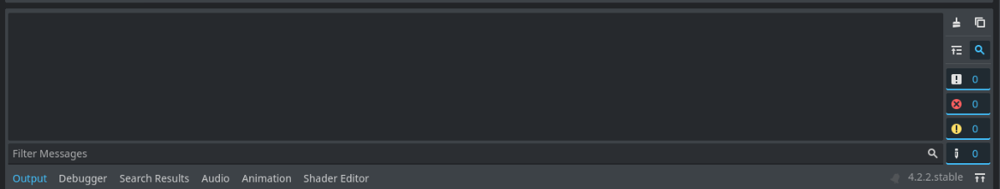
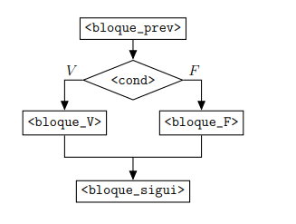
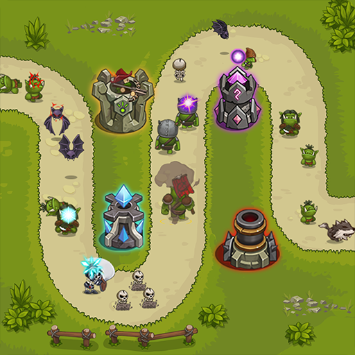

Empezar a programar con GDScript
Variables, condicionales, loops, funciones e input. Hoy el código se escribe en vivo: yo escribo, vos escribís.
“Hoy dejan de usar el motor… y empiezan a controlarlo.”
Cómo va a ser la clase de hoy
🔴 Cinco bloques, cinco escenas
Por cada tema armamos una escena con un script, en vivo, en un proyecto nuevo que se llama clase-02:
01_variables02_condicionales03_for04_funciones05_input
👐 Las reglas
- Escribí el código vos. Nada de copiar y pegar: los dedos también aprenden.
- Cada bloque termina con un punto de control: la consola tiene que mostrar algo concreto.
- Si te trabás, mirá la consola primero y después levantá la mano.
Hagamos que reaccione a una tecla
Un programador le dice a la computadora qué hacer, cuándo y por qué. Ejecutemos esto en vivo:
func _process(delta): if Input.is_action_pressed("ui_accept"): print("¡El jugador presionó ESPACIO!")
¿Qué es programar?
No es magia: es comunicación. Le hablás a una máquina que hace exactamente lo que le decís, ni más ni menos.
❌ Mito
“La computadora es inteligente y entiende lo que queremos.”
✅ Realidad
La computadora no piensa. Solo ejecuta instrucciones paso a paso, exactamente como se las damos.
SI (condición) ENTONCES (acción). Esa estructura SI/ENTONCES es el núcleo de todo programa.GDScript: el lenguaje de Godot
Lenguaje nativo de Godot, inspirado en Python pero pensado para videojuegos.
- Sintaxis simple y clara
- Integrado con el motor
- Familiar si sabés Python
- Pensado para juegos:
_process,_ready,Input…
extends Node # Este script controla al nodo # Define QUÉ puede hacer func _ready(): print("¡El nodo está listo!")
Qué significa cada línea
| Código | Significado |
|---|---|
extends Node | Le dice a Godot qué tipo de nodo controla este script. |
func _ready(): | Se ejecuta una sola vez cuando el nodo aparece en la escena. |
print(...) | Imprime texto en la consola: nuestro mejor amigo para depurar. |
print está corrida con Tab. Así Godot sabe que está adentro de _ready(). En GDScript la sangría no es estética: es parte del lenguaje.El ritual: una escena, un nodo, un script
- Scene → New Scene (Ctrl+N) → Other Node → buscá
Node→ Create - Doble clic sobre el nodo y renombralo:
Variables - Botón 📜 Attach Script → nombre
01_variables.gd→ Create - Ctrl+S: guardá la escena como
01_variables.tscn - F6 (Run Current Scene) → mirá el panel Output
🧠 Por qué un Node pelado
Hoy no dibujamos nada: solo queremos un lugar donde vive el script. Node es el nodo más simple que existe; no muestra ni mueve nada, y con eso alcanza.
# Así queda el FileSystem al final de la clase
res://
├── 01_variables.tscn 01_variables.gd
├── 02_condicionales.tscn 02_condicionales.gd
├── 03_for.tscn 03_for.gd
├── 04_funciones.tscn 04_funciones.gd
└── 05_input.tscn 05_input.gd
La consola: la ventana a lo que pasa "adentro"
La consola (panel Output) es donde Godot muestra todo lo que le pedimos con print(), además de errores y advertencias.
- Se abre sola al ejecutar la escena con F6
- Vive en la parte inferior del editor, pestaña “Output”
- Ahí aparecen los
print(), en el orden en que se ejecutan - Los errores salen en rojo, y casi siempre dicen en qué línea

Variables: cajas con etiqueta
Una variable es como una caja con una etiqueta. Adentro guardamos info que el programa necesita; la etiqueta es su nombre.
200 adentro. Cuando el juego necesita saber qué tan rápido va el personaje, abre ese cajón.# "var" crea una variable var velocidad = 200 var nombre = "Héroe" var esta_vivo = true var energia = 85.5 print(velocidad) # → 200
Tipos de datos fundamentales
| Tipo | Qué guarda | Ejemplo |
|---|---|---|
int | Número entero | 200 |
float | Número decimal | 85.5 |
String | Texto | "Héroe" |
bool | Verdadero / falso | true · false |
str(): para pegar un número con texto hay que convertirlo: str(100) → "100". Lo van a ver mucho.Le podés decir el tipo: : int, : float…
# Sin tipo (válido): var vida = 100 # Con tipo (recomendado): var vida: int = 100 var velocidad: float = 200.0 var nombre: String = "Héroe" var tiene_espada: bool = false
Por qué conviene
- El editor te avisa errores antes de ejecutar (por ejemplo, si guardás texto en
vida) - Mejor autocompletado
- El juego corre un poco más rápido
Hoy lo vamos a escribir sin tipo para que se vea más corto. Cuando te sientas cómodo, sumale el tipo.
Escena 01_variables: la ficha del personaje
extends Node var nombre = "Héroe" var vida = 100 var velocidad = 200.5 var tiene_espada = false func _ready(): print("Personaje: " + nombre) print("Vida: " + str(vida)) print("Velocidad: " + str(velocidad)) print("Tiene espada: " + str(tiene_espada))
- El ritual: nodo
Variables, script01_variables.gd - Cuatro variables, una de cada tipo
- En
_ready(), unprintpor variable - F6 y mirá el Output
str() a vida. ¿Qué dice la consola? Ese error en rojo lo vas a ver mil veces: texto + número no se suman.Condicionales: if / else
Sin if, el código siempre hace lo mismo. Con if, reacciona.
Toda decisión en un juego es un condicional: ¿tocó el suelo? → salta. ¿Vida en 0? → Game Over. ¿Recogió el ítem? → suma puntos.
var vida = 50 if vida <= 0: print("Game Over — murió") else: print("Sigo vivo con " + str(vida))

elif: múltiples caminos
var vida = 30 if vida <= 0: print("💀 Game Over") elif vida <= 25: print("🔴 ¡Vida crítica!") elif vida <= 50: print("🟡 Vida baja") else: print("🟢 Estás bien")
Operadores de comparación
== | igual a |
!= | distinto de |
< > | menor / mayor |
<= >= | menor o igual / mayor o igual |
vida = 30, la de <= 25 es falsa y la de <= 50 es la que entra: 🟡.Escena 02_condicionales: recibir daño
extends Node var vida = 100 var dano = 30 func _ready(): vida = vida - dano print("Vida actual: " + str(vida)) if vida <= 0: print("💀 Game Over") elif vida <= 30: print("🔴 Vida crítica") else: print("🟢 Seguís en pie")
- El ritual: nodo
Condicionales, script02_condicionales.gd - Dos variables y la resta en
_ready() - Primero solo el
if/else. Correr. Después sumar elelif - F6 y mirá el Output
dano = 70 → 🔴. dano = 100 → 💀. ¿Y con dano = 30 y vida = 60? Predecí antes de correr.Loops: repetir sin copiar y pegar
En vez de escribir lo mismo 100 veces, un loop lo repite automáticamente.
range(5) genera 0, 1, 2, 3, 4. Arranca en 0 y termina uno antes.for i in range(5): print("Vuelta número: " + str(i)) # Consola: # Vuelta número: 0 ... hasta 4
Arreglos: una caja con varias cosas adentro
# Un arreglo: varios valores, en orden var inventario = ["Espada", "Escudo", "Poción"] print(inventario[0]) # → Espada (¡se cuenta desde 0!) print(inventario.size()) # → 3 # Recorrerlo con for for item in inventario: print("Tenés: " + item)
🎮 Dónde aparecen
- El inventario del jugador
- La lista de enemigos vivos
- Las torres colocadas en un Tower Defense
_process()). Sirven para inicializar, generar contenido y recorrer listas.Ejemplo: una oleada de Tower Defense
extends Node2D var cantidad_enemigos = 5 var torres = ["Arquero", "Cañón", "Hielo"] func _ready(): spawnear_oleada() revisar_torres() # Genera N enemigos con un for func spawnear_oleada(): for i in range(cantidad_enemigos): print("👾 Enemigo " + str(i + 1) + " avanza por el camino") # Recorre la lista de torres colocadas func revisar_torres(): for torre in torres: print("🏹 Torre " + torre + " lista para disparar")

Escena 03_for: la horda y el inventario
extends Node var inventario = ["Espada", "Escudo", "Poción"] func _ready(): for i in range(3): print("Enemigo " + str(i + 1) + " entra a la arena") print("Llevás " + str(inventario.size()) + " cosas:") for item in inventario: print(" - " + item)
- El ritual: nodo
For, script03_for.gd - Primero el
forconrange(3). Correr. ¿Por qué eli + 1? - Después el arreglo y el segundo
for - F6 y mirá el Output
range(10). Agregá "Arco" al arreglo: ¿hace falta tocar el for? Sacale el str() al i + 1 y leé el error.Funciones: escribir una vez, usar mil
Sin funciones — repetido
print("Saltando") velocidad.y = -300 # ...y otra vez más abajo print("Saltando") velocidad.y = -300
Con funciones — limpio
func saltar(): print("Saltando") velocidad.y = -300 saltar() saltar()
Parámetros y valor de retorno
var vida = 100 # Recibe un parámetro func recibir_dano(cantidad): vida = vida - cantidad print("Vida: " + str(vida)) # Retorna un valor func esta_vivo(): return vida > 0 recibir_dano(25) if esta_vivo(): print("Sigo en pie")
Anatomía
func nombre():→ definiciónnombre()→ llamado (¡los()son obligatorios!)(cantidad)→ parámetro de entradareturn→ devuelve un resultado
Las funciones especiales de Godot
| Función | Cuándo se ejecuta |
|---|---|
func _ready(): | Una sola vez, cuando el nodo entra a la escena. Ideal para inicialización. |
func _process(delta): | En cada frame (~60/seg). Para lógica continua, como detectar input. |
func _physics_process(delta): | En cada paso de física. Para movimiento y colisiones. |
saltar(), recibir_dano()) las llamás vos.Escena 04_funciones: daño y estado
extends Node var vida = 100 func recibir_dano(cantidad): vida = vida - cantidad print("Vida: " + str(vida)) func esta_vivo(): return vida > 0 func _ready(): recibir_dano(25) recibir_dano(50) if esta_vivo(): print("Sigo en pie") else: print("💀 Game Over")
- El ritual: nodo
Funciones, script04_funciones.gd - Primero
recibir_dano()y dos llamados en_ready(). Correr - Después
esta_vivo()con sureturn, y elif - F6 y mirá el Output
recibir_dano(30). Escribí curar(cantidad) que sume vida. ¿Qué pasa si llamás esta_vivo sin los ()?Input: el puente jugador ↔ juego
Godot tiene un sistema Input que detecta teclas y botones. Se consulta dentro de _process(), cada frame.
is_action_pressed es true mientras la tecla está apretada. is_action_just_pressed es true un solo frame: el del toque.func _process(delta): # mientras esté presionada if Input.is_action_pressed("ui_accept"): print("Espacio presionado") # solo el instante en que se presiona if Input.is_action_just_pressed("ui_accept"): print("¡Acaba de presionar!")
Acciones de input predeterminadas
| Acción | Tecla | Uso típico |
|---|---|---|
ui_accept | Espacio / Enter | Saltar, confirmar |
ui_left · ui_right | ← → | Mover horizontal |
ui_up · ui_down | ↑ ↓ | Mover vertical, menús |
ui_cancel | Esc | Cancelar, pausa |
Project → Project Settings → Input Map. Lo vemos la semana que viene.Escena 05_input: todo junto
extends Node var nombre = "Héroe" var saltos = 0 func _ready(): print("ESPACIO para saltar, ← → para moverte") func _process(delta): if Input.is_action_just_pressed("ui_accept"): saltar() if Input.is_action_pressed("ui_right"): mover("derecha") if Input.is_action_pressed("ui_left"): mover("izquierda") func saltar(): saltos = saltos + 1 print(nombre + " saltó (" + str(saltos) + ")") func mover(direccion): print(nombre + " → " + direccion)
- El ritual: nodo
Input, script05_input.gd - Primero
_process()con elifdel espacio ysaltar(). Correr - Después las flechas y
mover() - F6, clic en la ventana del juego, y apretá teclas
just_pressed por pressed en el salto y mantené apretado. Eso es _process(): 60 veces por segundo.Desafío: seguí la escena 05_input
- Una variable
monedasque suba al apretar ↑ (ui_up) - Una función
mostrar_estado()que imprima nombre, saltos y monedas de una - Llamala al apretar Esc (
ui_cancel) - Extra: una variable
golpesque suba con ↓. A los 3, imprimir💀 Game Overuna sola vez
if, funciones e input.🛟 Si te trabás
- ¿La consola dice algo en rojo? Leé el número de línea.
- ¿Sangría con Tab, no con espacios?
- ¿Los
()después del nombre de la función?
Todo lo que escribieron hoy
| Concepto | Para qué sirve | Escena |
|---|---|---|
| Variables | Guardar información (vida, velocidad, nombre…) | 01_variables |
| Condicionales | Tomar decisiones: if / elif / else | 02_condicionales |
| Loops y arreglos | Repetir y recorrer listas: for … in | 03_for |
| Funciones | Agrupar y reutilizar código con nombre | 04_funciones |
| Input | Detectar al jugador y crear interactividad | 05_input |
if? ¿Cuál un loop? ¿Cuál detecta input?El TP de la semana
📝 TP 1: tu primera escena y tu primer juego de texto
- Parte A: una escena con piso, un jugador animado y una caja que cae
- Parte B: una escena por cada tema de hoy, como hicimos en clase
- Final: La Cripta del Golem, un combate por consola que junta todo
📚 Recursos
- Docs de GDScript:
docs.godotengine.org - Sección Scripting → GDScript basics
- Traé tu proyecto
clase-02a la clase práctica: el TP arranca de ahí
“Hoy dejaron de usar el motor… y empezaron a controlarlo.” · Logo y mascota de Godot © Godot Foundation — CC BY 4.0.